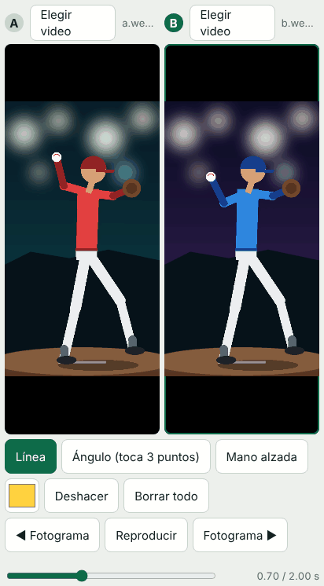

Compara dos videos en el momento del contacto
Form Note es una herramienta gratuita para revisar la técnica de béisbol en video. Alinea dos clips en el mismo momento, por ejemplo tú y un modelo, o la semana pasada y esta, y avanza fotograma a fotograma. Los videos se procesan solo en tu dispositivo.
Abrir la app
Dos clips alineados en el mismo punto de sincronía y avanzados 3 fotogramas. Los clips de muestra son ilustraciones, no jugadores reales.
En qué destaca Form Note
Alinea ambos clips en el momento clave
Detén A y B en el momento del contacto o de la suelta y pulsa “Sincronizar aquí”. Ese momento pasa a ser cero y puedes avanzar o retroceder en ambos clips a la vez. Aunque los clips empiecen en momentos distintos, comparas el mismo instante.
Un toque, exactamente un fotograma
Está hecho para que un toque avance exactamente un fotograma en clips de 30, 120 o 240 fps. Los swings y lanzamientos rápidos se siguen sin saltos. Los dibujos quedan fijos en pantalla, así que puedes comprobar el movimiento del cuerpo frente a una línea de referencia.
Comparte o consulta a una IA sobre el resultado
Pulsa “Preguntar a IA” para obtener 4 imágenes alrededor del momento y una pregunta lista (puntos buenos, problemas, ejercicios) para enviar a la app de IA que prefieras. “Compartir” envía imágenes a apps de chat.
- Los videos no salen de tu dispositivo
- Sin registro ni costes
- Solo abrir en el navegador
Comparar dos videos (la mejor forma de usarlo)
Si es tu primera vez, con estos 4 pasos basta.
Elige dos videos
Pulsa Comparar y usa Elegir video para A y para B. Si eliges varios videos a la vez, puedes cambiarlos rápido con ◀ ▶.
Detén cada uno en el momento a comparar
Usa 1 fot. ▶, ◀ 1 fot. o el control deslizante para poner A en el momento del contacto o de la suelta. Luego toca la pantalla de B para seleccionarla y pon B en el mismo momento.
Pulsa “Sincronizar aquí”
Con ambos en su momento, pulsa Sincronizar aquí. Ese momento pasa a ser cero. Desde ahora, 1 fot. ▶ y Reproducir mueven ambos videos juntos. La pantalla muestra los fotogramas desde el punto de sincronía.
Guarda, comparte o pregunta a la IA
Pulsa Preguntar a IA para obtener una imagen de los momentos alrededor del punto de sincronía, lista para enviar a una app de IA con una pregunta. Para mostrarlo a alguien, usa Compartir, que incluye tus dibujos.
Uso básico (un video)
Elige un video
Pulsa Elegir video y escoge un clip de tu teléfono. Para comparar dos clips, pulsa primero Comparar y luego elige un segundo video para B. Los videos horizontales y verticales se muestran automáticamente. Puedes elegir varios videos a la vez; con dos o más, usa ◀ ▶ junto al nombre para cambiar entre ellos rápidamente (los dibujos se borran al cambiar).
Busca el momento
Pulsa 1 fot. ▶ o ◀ 1 fot. para avanzar un fotograma cada vez. Arrastra el control deslizante para moverte más rápido, o pulsa Reproducir y elige la velocidad de 0.1x a 1x. Con Sincronizar A y B activado, ambos videos se mueven juntos.

Cada toque en Fotograma ▶ avanza un fotograma. Los jugadores son ilustraciones.
Dibuja y mide
Abre Herramientas de dibujo en la parte de abajo de la pantalla, elige una herramienta y dibuja sobre el video. Los dibujos permanecen en pantalla al avanzar de fotograma, así puedes comprobar si una posición cambia.
Guarda y comparte
Pulsa Compartir para obtener una imagen con tus dibujos. Con Este momento y 4 fotogramas, arriba, cambias entre una sola imagen y un conjunto de cuatro. Abajo se añaden el nombre de la app, el enlace y un código QR, así quien la reciba puede abrir la app. En teléfonos compatibles, pulsa Compartir para enviar la imagen directamente a una app de chat; el enlace también se envía como texto, aunque que se vea depende de la app de chat. También puedes mantener pulsada la imagen para guardarla o hacer una captura.
Pregunta a la IA con 4 momentos clave
Pulsa Preguntar a IA en la pantalla principal. La app reúne 4 imágenes alrededor del momento que estás viendo, con el intervalo (en fotogramas) que elijas, y las junta en una sola imagen (por ejemplo, con intervalo de 5 fotogramas: −10, −5, 0 y +5; 0 es el momento que estás viendo, marcado con ●; cerca del final del video, los que faltan se toman del otro lado). Con dos videos, las 4 imágenes tienen A y B alineados en los mismos momentos. En la misma pantalla se prepara una pregunta para la IA (puntos buenos, problemas, ejercicios). Escribe tu edad y problema, elige la relación entre A y B si tienes dos videos (ambos soy yo / A soy yo y B es el modelo, etc.), pulsa “Copiar pregunta y enviar a app de IA” y envía la imagen y la pregunta en una app como Claude o ChatGPT. Puedes editar la pregunta libremente. Pide a la IA que compare A y B número por número, enumera puntos a observar e indica que escriba “no se puede determinar” sobre lo que no se ve. La imagen solo se envía a la app que elijas. Los comentarios de la IA son orientativos; si tienes dolor, consulta a un médico o entrenador.
Herramientas de dibujo
| Línea | Arrastra de un punto a otro. Útil para comprobar una línea recta, como una vertical que pase por la cabeza. |
|---|---|
| Ángulo | Toca tres puntos en orden (la pantalla dice “Toca 3 puntos”). El ángulo se mide en el punto del medio y se muestra sobre el video. Para un codo, toca hombro, codo y muñeca. |
| Mano alzada | Arrastra para dibujar cualquier forma. |
| Color (cuadrado amarillo) | Cambia el color de la próxima línea que dibujes. |
| Deshacer | Elimina el último punto o dibujo del video seleccionado. |
| Borrar todo | Elimina todos los dibujos del video seleccionado. |
Ajustes de reproducción
| Velocidad | 0.1x, 0.25x, 0.5x o 1x. Con velocidades más lentas es más fácil ver los movimientos rápidos. |
|---|---|
| fps | Ponlo igual que los fotogramas por segundo con los que grabaste (por ejemplo 30, 60 o 240). Define cuánto avanza 1 fot., así que un toque debe ser un fotograma de tu video. La app no puede leer por sí sola los fotogramas por segundo reales de un video: si grabaste a 240 fps y lo dejas en 30, “un fotograma” no coincidirá con tu video. En videos cuya frecuencia de fotogramas cambia durante la grabación (frecuencia variable), no se puede garantizar un avance exacto. |
| Comparar | Muestra los videos A y B juntos. Toca Volver a un video para volver a un solo video. |
| Sincronizar aquí | Detén el video A y el video B en el momento que más quieres comparar (impacto, lanzamiento…) y toca Sincronizar aquí. Ese momento pasa a ser cero y los dos videos avanzan juntos, fotograma a fotograma, antes y después. La pantalla muestra cuántos fotogramas y segundos hay desde el punto base. Volver al punto devuelve ambos videos a él. Si uno llega a su primer o último fotograma, los dos se detienen para no perder la diferencia. Al elegir otro video, se borra el punto base. |
| Sincronizar A y B | Si está activado, Reproducir, Fotograma y la barra controlan los dos videos. Desactívalo para mover solo un video. Si los videos empiezan en momentos distintos, desactívalo, ajusta cada uno a la escena que quieres comparar y vuelve a activarlo: se moverán manteniendo la diferencia entre ambos. |
Consejos para grabar
- Apoya el teléfono en un trípode o en una superficie estable para que la imagen no tiemble.
- Graba siempre desde el mismo lugar y con el mismo ángulo, para comparar los clips con facilidad.
- Graba de lado para la técnica de lanzar y de bateo, con todo el cuerpo dentro del cuadro.
- Usa 60 fps o más si tu teléfono lo permite. El modo de cámara lenta es aún mejor para swings y lanzamientos rápidos.
- Con buena luz y un fondo sencillo, el cuerpo se ve mejor.
Preguntas
Soy nuevo. ¿Cómo lo uso?
Debajo de “¿Primera vez?”, en la parte de abajo de la app, hay dos guías. “IA: 1 video” va desde elegir un video hasta enviarlo a una app de IA. “IA: comparar 2” coloca dos videos lado a lado, alinea el punto de sincronía y sigue hasta enviarlo a una app de IA. Ambas señalan la pantalla paso a paso. La primera vez que abres la app también aparece un aviso sobre la guía.
¿Se suben mis videos a algún sitio?
No. Los videos se abren y se procesan en tu dispositivo, dentro del navegador. Form Note no los envía a ningún servidor.
¿Se puede abrir la app desde la imagen guardada?
Sí. Abre la imagen guardada en el mismo teléfono y mantén presionado el código QR (en Google Fotos o Google Lens, toca el enlace detectado), o escanéalo con la cámara de otro teléfono. El enlace escrito junto al código QR forma parte de la imagen, así que no se puede tocar. El código QR funciona en una imagen guardada o en una captura de pantalla, siempre que la imagen siga siendo lo bastante grande para leerse. Si usas Compartir, el enlace se envía también como texto y muchas apps de mensajería lo hacen tocable.
No veo el botón Compartir.
El botón Compartir solo aparece en los navegadores que pueden compartir imágenes. Si no lo ves, mantén presionada la imagen para guardarla o haz una captura de pantalla, y envía esa imagen.
¿Qué incluye la imagen guardada?
La imagen de Compartir es el fotograma que estabas viendo, con tus dibujos y ángulos encima. La imagen de Preguntar a IA no lleva dibujos. Abajo se añade una barra con el nombre de la app, su enlace y un código QR.
El video tarda mucho en cargar.
Los archivos grandes, como clips largos en 4K, pueden tardar en abrirse. Prueba a grabar en 1080p o recorta el clip a la parte que necesitas.
El video no se reproduce.
Algunos videos del teléfono usan un formato que no todos los dispositivos pueden reproducir, sobre todo los de HEVC (H.265) del iPhone. En iPhone, elige Ajustes → Cámara → Formatos → Más compatible y vuelve a grabar, o convierte el video a MP4 con H.264. Luego elígelo de nuevo.
¿Los dibujos siguen al video?
No. Los dibujos quedan fijos en la zona de imagen, no en cada fotograma. Se mantienen en el mismo lugar al avanzar por el video, así puedes comparar el movimiento del cuerpo con una línea fija. Cada panel guarda sus propios dibujos, y se borran al elegir otro video.
Fotograma no avanza de uno en uno.
Revisa el ajuste de fps. Debe coincidir con los fotogramas por segundo con los que grabaste. Si es mayor que el real del video, cada toque avanza menos de un fotograma.
Mi teléfono siempre abre la misma carpeta al elegir un video.
El selector de archivos lo controla tu teléfono, no la app. Prueba la vista Recientes o Videos del selector para encontrar tus clips sin recorrer carpetas.
¿Se quedan los dibujos en el video?
Se quedan mientras la página está abierta. Si recargas la página o eliges otro video, se borran. Usa Compartir para conservar una imagen.